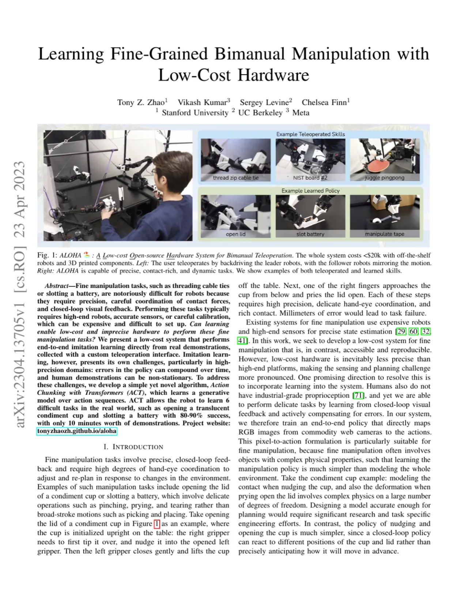
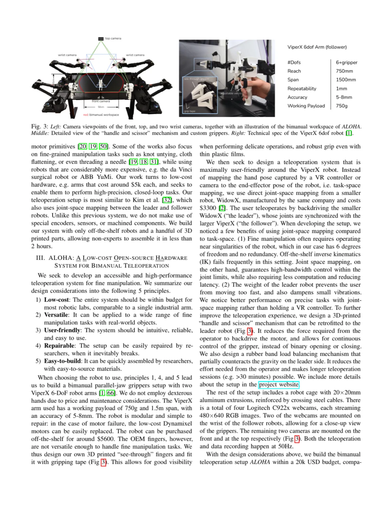
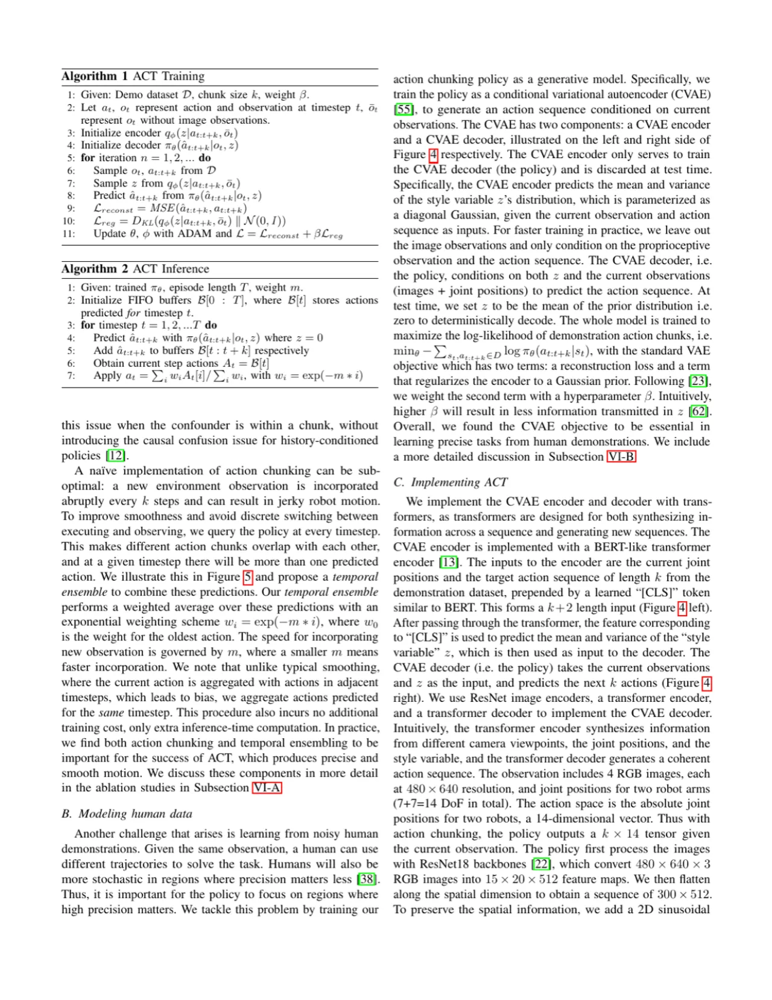
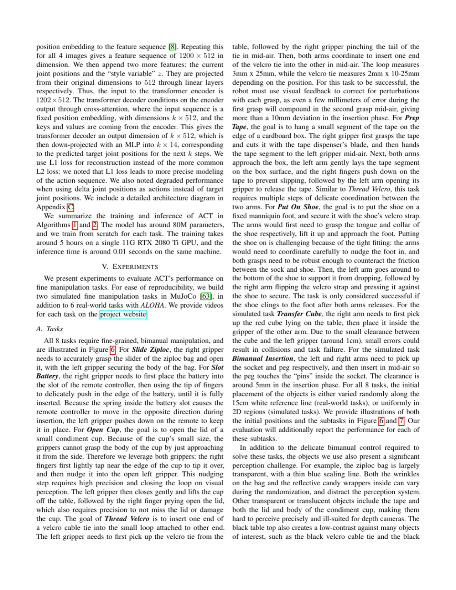

精细操作（如插电池、开调味品杯）历来需要昂贵的高精度机器人。本文提出 ALOHA——一套预算在 $20k 以内的开源双臂遥操作系统，以及配套的模仿学习算法 ACT（Action Chunking with Transformers）。ACT 以 Transformer + CVAE 为骨干，将未来 k 步动作作为一个"chunk"整体预测，有效缓解了复合误差（compounding error）和人类演示中的非 Markov 噪声，最终在真实世界 6 项精细操作任务上实现 80–90% 成功率。
精细操作任务（opening a lid of a condiment cup、slotting a battery）需要毫米级精度、接触力的精细协调以及视觉闭环反馈，传统上依赖昂贵的高端机器人与精密传感器。本文的核心问题是：能否让低成本、本身不够精确的硬件，通过学习来完成精细操作？
"Can learning enable low-cost and imprecise hardware to perform these fine manipulation tasks?"
低成本硬件的不精确性使感知与规划难度更高。人类虽同样没有工业级本体感觉（proprioception），却能通过学习和视觉闭环反馈完成精密任务。因此，作者设计了端到端像素到动作（pixel-to-action）的策略，并搭建了一套低成本但具备高度灵巧性的遥操作系统来采集高质量演示数据。

本文提出两大核心贡献：（1）ALOHA 遥操作硬件系统，以及（2）ACT（Action Chunking with Transformers）模仿学习算法。两者协同作用，使低成本硬件能够从少量真实演示中学会精细双臂操作技能。
ALOHA 以两条 ViperX 6-DoF 机械臂（~$5,600/臂）作为 follower，两条 WidowX 机械臂（~$3,300/臂）作为 leader，采用 joint-space mapping 进行遥操作——用户反向驱动 leader，follower 实时镜像。相比 task-space（末端执行器）映射，joint-space 映射在奇点附近控制更稳定、延迟更低。系统配备 4 路 Logitech C922x 网络摄像头（分辨率 480×640，帧率 30fps），包括顶部、正面和两个腕部摄像头，以 50Hz 采集数据。
针对模仿学习的两大难题——复合误差（compounding error）和人类演示的非 Markov 噪声，ACT 提出了以下设计：
具体实现：CVAE encoder 采用 BERT-style Transformer encoder，输入为 [CLS] token + 关节位置 + 目标动作序列（长度 k+2）；CVAE decoder（即策略）使用 ResNet18 图像编码器 + Transformer encoder-decoder，处理 4 路 480×640 RGB 图像及关节位置，输出 k×14 维动作序列（双臂绝对关节位置）。使用 L1 重建损失 + KL 散度正则化，共约 80M 参数，在单张 RTX 2080 Ti 上训练约 5 小时。

每个真实任务收集 50 条演示（Thread Velcro 任务收集 100 条），每条演示耗时 8–14 秒（400–700 步@50Hz），总数据量约 10–20 分钟/任务。演示具有固有随机性——例如空中换手的位置每次都略有不同——这要求策略学习任务的本质规律而非死记演示。
实验覆盖 2 个 MuJoCo 仿真任务（Cube Transfer、Bimanual Insertion）和 6 个真实任务（Slide Ziploc、Slot Battery、Open Cup、Thread Velcro、Prep Tape、Put On Shoe），与 BC-ConvMLP、BeT、RT-1、VINN 四条基线对比。仿真任务报告 3 个随机种子、各 50 次评测的平均成功率；真实任务报告 1 个种子、25 次评测的成功率。
| 任务 | BC-ConvMLP | BeT | RT-1 | VINN | ACT (Ours) |
|---|---|---|---|---|---|
| Cube Transfer (sim, scripted) | 3 | 16 | 2 | 17 | 82 |
| Cube Transfer (sim, human) | 3 | 16 | 2 | 17 | 82 |
| Bimanual Insertion (sim, scripted) | 0 | 0 | 0 | 0 | 50 |
| Slide Ziploc (real) | 0 | 0 | 0 | 0 | 88 |
| Slot Battery (real) | 0 | 0 | 0 | 0 | 96 |
ACT 在每个任务上都以大幅优势超越所有基线。仿真任务中，ACT 较第二好方法的成功率领先幅度分别为 59%、49%、29% 和 20%。其他方法虽然能完成前 1–2 个子任务，但最终成功率均低于 30%。
| 任务 | BeT (最终成功率) | ACT (最终成功率) |
|---|---|---|
| Open Cup | 0 | 84% |
| Thread Velcro | 0 | 20% |
| Prep Tape | 0 | 64% |
| Put On Shoe | 0 | 92% |
BeT 在上述 4 项高难度任务的最终成功率均为 0，而 ACT 展现出显著能力（Thread Velcro 相对较低是因为该任务需要在空中完成毫米级插入，视觉定位极为困难）。


论文明确指出："there exist tasks that are beyond the capability of either the robots or the learning algorithm, such as buttoning up a dress shirt." 此类任务需要更复杂的手指自由度或更长程的规划，当前 parallel-jaw gripper 设计无法胜任。
Thread Velcro 最终成功率仅 20%，每个子任务成功率约减半。主要失败模式：（1）右臂空中夹持过早，无法抓住扎带尾端；（2）插入阶段不够精准，错过 3mm×25mm 的塑料环。根本原因是黑色扎带与背景对比度低，仅占图像极小比例，视觉定位困难。
ACT 对每个任务从零训练独立策略（约 5 小时/任务），模型并不具备跨任务泛化或 few-shot 能力。对新任务需重新采集 50 条演示并重训，这限制了系统在实际部署中的灵活性。
每个任务仅收集 50 条演示（Thread Velcro 为 100 条），物体的位置随机化仅限于 15cm 白色参考线范围内，背景和光照条件相对固定。在更复杂或更多变的真实场景中泛化能力尚未验证。
所有演示均由单一操作员采集，人类演示的风格和策略具有操作员依赖性。不同操作员的数据混合可能引入更大的多模态噪声，CVAE 是否足以建模此类噪声尚未验证。